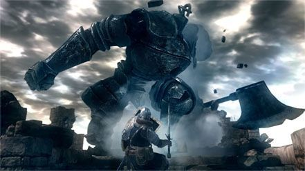

Dark Souls: Remastered
Early Game
Dark Souls' early game starts the player in the Undead Asylum, where they are freed by Oscar of Astora before making their way through the halls. They will then encounter the tutorial boss, the Asylum Demon, who will prove to be their first major challenge. After defeating the demon, the player will then make pilgrammage to Firelink Shrine, the hub world for the rest of the game. From there, the player will have to choose which path to follow. There are three main options from Firelink Shrine:
- Undead Parish
- The Catacombs
- New Londo Ruins
-
- If the player has the master key and goes to New Londo, they can also immediately access:
-
- Valley of the Drakes
- Blighttown
After defeating the Bell Gargoyles in the Undead Parish and Quelaag at the bottom of Blighttown to ring the bells of awakening, the player will have to endure the traps and ambushes at Sen's Fortress. After navigating the maze, at the very top of the fortress is the final early game boss, the Iron Golem.
Mid Game
After defeating the Iron Golem, the player can then ascend to Anor Londo, City of the Gods. Once the player makes their way through the defences of the city, they will end up inside the palace of Gwyn, Lord of Cinder. Gwyn is not here though. Instead, the player must face off against the two knights guarding the Lordvessel, Dragonslayer Ornstein and Executioner Smough.

After defeating the duo, the player will then acheive the Lordvessel and make it possible to teleport to many previous checkpoints in the game, making it easy to travel the land in search of the four lords to retrieve the shards of Gwyn's soul.
Late Game
Dark Souls has four endgame bosses, those being:
- Seath the Scaleless
- Nito, First of the Dead
- The Bed of Chaos
- The Four Kings of New Londo
The player must journey through four unique areas to fight these bosses, each with different landscapes and enemies to match their rulers. After defeating these four foes, you will use their powerful souls to travel to the Kiln of the First Flame and be tasked with your final battle to take down Gwyn, Lord of Cinder.